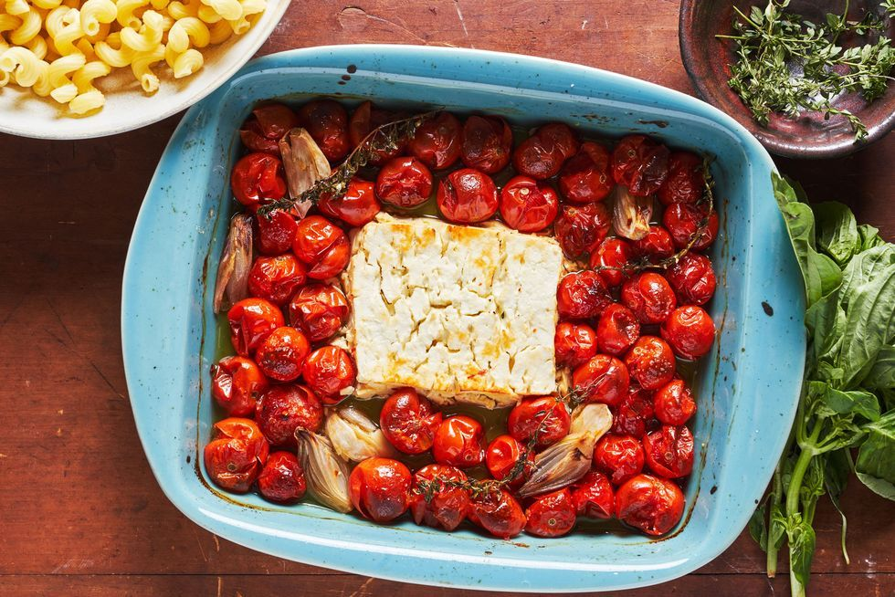

Feta Pasta

Baked Feta Pasta
A dish Elly found on TikTok and has become a regular dinner
- Feta
- Pasta
- Tomatoes
- Chorizo
- Garlic
- Salt and Pepper
- 1 Onion
Steps
- Place the feta in the centre of an oven proof dish
- surround the feta with whole baby plum tomatoes
- Slice the onion and chorizo and layer on top of the tomatoes
- add garlic, salt and pepper to flavour
- bake
- boil pasta
- once cooked remove from oven and drain the pasta
- mix together and serve with garlic bread
Home